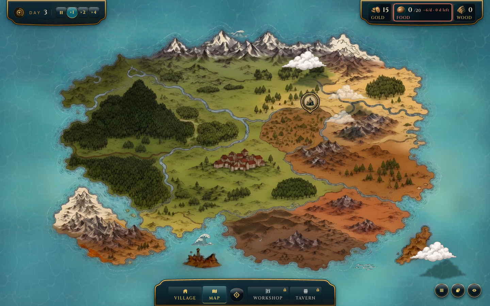
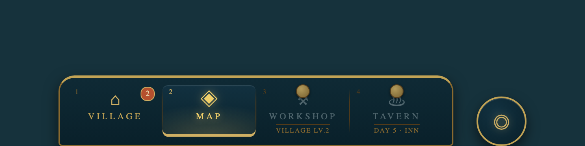
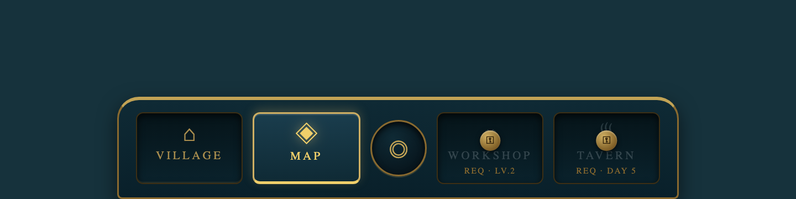
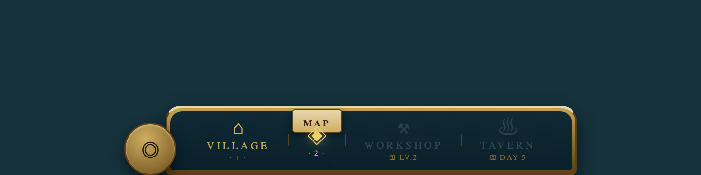

nav-bar



# Digest critiche — nav-bar (round 1, 2/3 image-grounded)
Provider: chatgpt, claude, deepseek — run `20261024-critique-nav-bar`,
turn T-001 (+retry T-002 per chatgpt), prompt verbatim R-282, 5/4 shot
allegati (ctx default+village, iso plinth+rail).
**Provider failure dichiarato:** chatgpt — `image_attached: 5/4` dal
transport ma il modello dichiara due volte di non vedere alcuno
screenshot (vedi `chatgpt.md`). Escluso dal conteggio: convergenza =
2/2 provider image-grounded (claude + deepseek, entrambi con fatti
osservati corretti sugli shot: moneta compass centrale, lucchetti,
attivo MAP, etichette small-caps oro).
## Convergenza forte (2/2)
1. **Il compass/recenter non deve stare dentro la barra di navigazione.**
È un'azione, non una destinazione; divide la barra in due gruppi
semantici falsi (2 sbloccati | 2 bloccati) e l'icona a mirino si
legge come "bersaglio". Entrambi lo vogliono fuori o al margine:
- claude: «un errore di architettura… una tab bar serve solo a
navigare, non a eseguire azioni» → nel cluster bottom-right,
contestuale alla vista Map, hotkey `C`.
- deepseek: «dovrebbe essere rimosso dalla barra di navigazione
principale e posizionato come overlay sulla mappa o come pulsante
flottante… spostare il mirino a sinistra o a destra».
2. **I tab bloccati sono vicoli ciechi informativi.** Il lucchetto da
~8px nell'angolo non dice né perché né cosa serve per sbloccare.
- claude: «ghost tab… metà della barra è decorazione morta; un tab
disabilitato ha senso quando comunica che potrebbe diventare
disponibile in futuro, ma il tuo non comunica niente» → tooltip
con il requisito esatto + shake/toast al tentativo.
- deepseek: «il giocatore non sa perché sono bloccate… il lucchetto
da solo è un vicolo cieco informativo» → hint tipo "Requires Lvl 3".
3. **Lo stato attivo è troppo timido.** Il gradiente teal è appena
percettibile e le etichette restano oro in entrambi gli stati.
- claude: «lo stato attivo non può dipendere dal solo colore… rischi
di non arrivare a 3:1, e il teal-su-teal-scuro-su-oceano-teal
peggiora» → 3 canali: fondo + indicatore + luminosità.
- deepseek: «il feedback visivo… è troppo timido; il focus deve
essere inequivocabile» → pill/riempimento/bordo inferiore marcato.
4. **Scala e dettaglio sotto il minimo leggibile.** Icone ~14px
illeggibili (cartello Workshop, botte Tavern), etichette small-caps
~11px il testo più fragile dell'HUD.
- claude: «icone a 24px; etichette oro su teal scuro il testo più
piccolo e fragile dell'intera HUD».
- deepseek: «l'icona del mirino rompe il ritmo orizzontale;
spaziatura e peso visivo sembrano diversi».
- claude aggiunge: non entra in 390px (4 slot + compass + cornice).
## Disaccordi / punti di un solo provider (verbatim)
- **Slot a larghezza uguale** — solo claude: «Gli slot seguono la
lunghezza dell'etichetta… Una barra di navigazione dovrebbe avere
slot uguali, perché la memoria muscolare si costruisce sulla
posizione.» Deepseek non lo chiede; propone invece un layout
asimmetrico (utility a sinistra, nav al centro, spaziatore a destra).
- **Hotkey + badge di gioco** — solo claude: «Nessun hotkey sui tab…
nessun badge di notifica… Il Village potrebbe mostrare "villager
inattivi", la Tavern "evento in arrivo". Oggi la barra non sa niente
del gioco.»
- **Rumore di cornici** — solo claude: «quattro grammatiche di bordo
in 530px. Una cornice ornata dovrebbe contenere elementi piatti e
silenziosi, non competere con loro.»
- **Dove va il compass** — claude: «nel cluster in basso a destra
(visibile solo in vista Map)»; deepseek: «a sinistra o a destra»
della barra stessa, o overlay mappa. Diverso destinatario.
- **Giudizio complessivo** — claude: «5.5/10: bello in screenshot,
debole in uso»; deepseek: «ottima base visiva ma gerarchia funzionale
confusa» (più clemente, senza voto).
- **Da tenere** — solo claude lo esplicita: «Il teal dell'attivo
riecha il pill ×1 dei controlli tempo: stesso token per
"selezionato", ottima coerenza. Le icone scelte sono diegetiche e la
sagoma a "coperchio" della barra è un bel segno distintivo. Tienili.»
## Implicazioni per i mockup (V1)
- M1 — dock 4 slot uguali, compass estratto a medaglione separato,
attivo a 3 canali (linea oro + bagliore + label chiara), bloccati con
micro-cartellino del requisito (claude).
- M2 — barra "a battenti sigillati": slot come pannelli incassati,
lucchetto = sigillo di cera centrale con requisito inciso, attivo =
cartiglio ottone in rilievo; compass resta ma come bussola ottone
incassata, famiglia distinta (mix claude+deepseek).
- M3 — rotaia continua ottone senza box per slot, divisori incisi,
attivo = cartiglio oro sporgente; compass a capo rotaia come
medaglione terminale; bloccati con keyhole + requisito inciso sulla
rotaia (deepseek-asimmetrico, materico).
Vincoli Director ereditati: niente hardware di sospensione/catene;
niente halo interni nelle celle; solo token `--skin-hud-*`.
Raw: .mw/ui-catalog/components/nav-bar/critiques/ + mockups/ · status: in_review